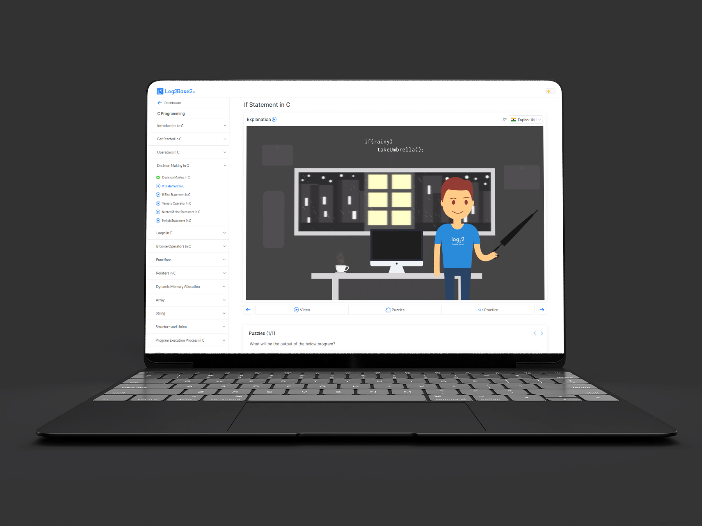
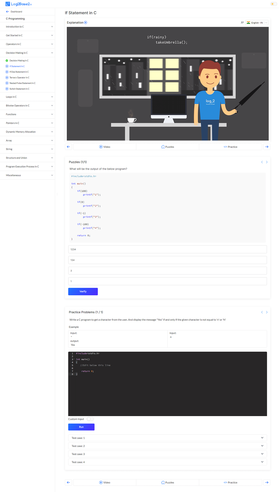

Integrated video, puzzle, and practice page designed to keep learners in flow.
Adobe XD | Photoshop
Log2Base2's learning model is built around a sequence: watch an animated concept video, attempt a puzzle that applies the concept, then practice with progressively harder problems. This three-stage sequence is the core learning loop — but it was spread across three separate pages, forcing learners to navigate away from their current context every time they moved between stages. The result was friction, drop-off between stages, and a fragmented experience that undermined the cohesion of the learning model itself.
Consolidating three distinct content types — video player, interactive puzzle, and practice problem set — into a single page without creating a cluttered, overwhelming layout was the core UX challenge. Each content type had its own functional requirements, visual weight, and interaction model. The design had to give each type enough space to function well independently while making it immediately clear how they related to each other as a unified learning progression. Responsive behaviour also needed careful consideration, given the complexity of the layout on smaller screens.
I led the UX design from initial problem framing and user flow mapping through to final high-fidelity screens in Adobe XD. I ran the information architecture work that defined how the three content zones would be organised on the page, designed the visual hierarchy and spacing system that kept each zone distinct without feeling disconnected, and collaborated with the engineering team to validate technical feasibility before finalising the design for handoff.
The page is structured as a top-to-bottom learning flow: the video player occupies the dominant position at the top, followed by the puzzle section directly below — close enough that learners don't need to scroll far to move between them, but visually separated enough that each zone feels like its own space. The practice problems section uses progressive disclosure — initially showing only the first problem with a clear "next" pathway — to avoid overwhelming learners with the full problem set before they're ready. A persistent progress indicator at the top of the page gives learners a constant sense of where they are in the sequence, reinforcing forward momentum throughout the session.

The final design brings all three content types — video, puzzle, and practice — into a single, unified page experience. The layout preserves the integrity of each content zone while making their relationship to each other visually explicit. Navigation between stages requires no page load, keeping learners in the learning context from start to finish. The design was validated with the product team and engineering before handoff and was implemented as a template for all video-based content pages on the platform.
Delivered a consolidated, learner-centric page that eliminated the navigation friction between video, puzzle, and practice stages. The integrated design directly supported the platform's goal of increasing time-on-page and reducing drop-off between learning stages — keeping learners engaged in the full learning loop rather than losing them at the transitions.
